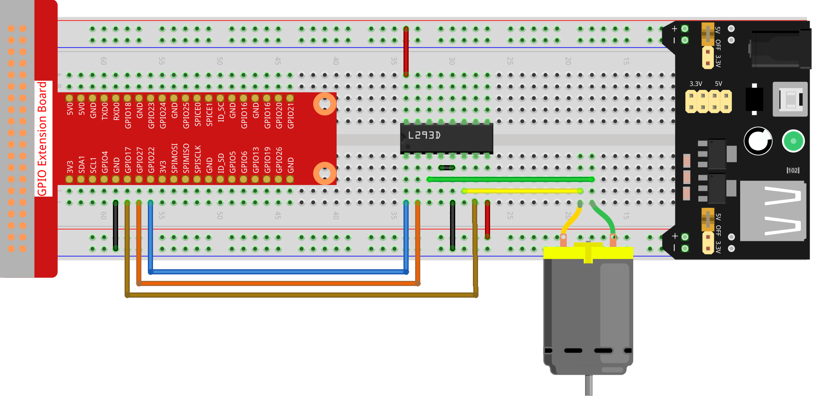

Nota
¡Hola! Bienvenido a la Comunidad de Entusiastas de SunFounder para Raspberry Pi, Arduino y ESP32 en Facebook. Sumérgete en el fascinante mundo de Raspberry Pi, Arduino y ESP32 junto a otros entusiastas.
¿Por qué unirte?
Soporte Experto: Resuelve problemas postventa y desafíos técnicos con la ayuda de nuestra comunidad y equipo.
Aprende y Comparte: Intercambia consejos y tutoriales para mejorar tus habilidades.
Avances Exclusivos: Obtén acceso anticipado a nuevos anuncios de productos y adelantos exclusivos.
Descuentos Especiales: Disfruta de descuentos exclusivos en nuestros productos más recientes.
Promociones Festivas y Sorteos: Participa en sorteos y promociones especiales de temporada.
👉 ¿Listo para explorar y crear con nosotros? Haz clic en [Aquí] y únete hoy mismo.
1.3.1 Motor
Introducción
En este proyecto, aprenderemos a utilizar el L293D para controlar un motor de corriente continua (DC) y hacerlo girar en el sentido horario y antihorario. Dado que el motor DC necesita una mayor corriente, para mayor seguridad utilizaremos el Módulo de Alimentación para suministrar energía al motor.
Componentes

Diagrama del Circuito
Conecta el módulo de alimentación a la protoboard y coloca el puente en el pin de 5V para que emita una salida de 5V. Conecta el pin 1 del L293D al GPIO22 y configúralo como nivel alto. Conecta el pin 2 al GPIO27 y el pin 7 al GPIO17; luego, configura un pin en alto y el otro en bajo para cambiar la dirección de rotación del motor.

Procedimiento Experimental
Paso 1: Construye el circuito.
Nota
El módulo de alimentación puede utilizar una batería de 9V con el broche para batería de 9V incluido en el kit. Inserta el puente del módulo de alimentación en el bus de 5V de la protoboard.

Paso 2: Dirígete a la carpeta del código.
cd ~/davinci-kit-for-raspberry-pi/nodejs/
Paso 3: Ejecuta el código.
sudo node motor.js
Al ejecutar el código, el motor primero gira en sentido horario durante 1 segundo, luego se detiene durante 1 segundo, después gira en sentido antihorario durante 1 segundo, y finalmente se detiene durante 1 segundo. Esta serie de acciones se repetirá continuamente.
Código
const Gpio = require('pigpio').Gpio;
MotorPin1 = new Gpio(17, { mode: Gpio.OUTPUT });
MotorPin2 = new Gpio(27, { mode: Gpio.OUTPUT });
MotorEnable = new Gpio(22, { mode: Gpio.OUTPUT });
// Define una función para girar el motor
// La dirección debe ser:
// 2 (horario), 1 (antihorario), 0 (detener)
function motor(direction) {
switch (direction) {
case 2: // Sentido horario
// Configura la dirección
MotorPin1.digitalWrite(1)
MotorPin2.digitalWrite(0)
// Activa el motor
MotorEnable.digitalWrite(1)
console.log('Clockwise')
break;
case 1: // Sentido antihorario
// Configura la dirección
MotorPin1.digitalWrite(0)
MotorPin2.digitalWrite(1)
// Activa el motor
MotorEnable.digitalWrite(1)
console.log('Counterclockwise')
break;
case 0: // Detener
// Desactiva el motor
MotorEnable.digitalWrite(0)
console.log('Stop')
}
}
process.on('SIGINT', function () {
MotorEnable.digitalWrite(0)
process.exit();
})
let index=-1
setInterval(() => {
index=(index+1)%3
motor(index)
}, 1000)
Explicación del Código
MotorPin1 = new Gpio(17, { mode: Gpio.OUTPUT });
MotorPin2 = new Gpio(27, { mode: Gpio.OUTPUT });
MotorEnable = new Gpio(22, { mode: Gpio.OUTPUT });
Importa el módulo pigpio y crea tres objetos de la clase Gpio para controlar los tres puertos IO: Gpio17, Gpio27 y Gpio22.
function motor(direction) {
switch (direction) {
case 2: // Sentido horario
// Configura la dirección
MotorPin1.digitalWrite(1)
MotorPin2.digitalWrite(0)
// Activa el motor
MotorEnable.digitalWrite(1)
console.log('Clockwise')
break;
case 1: // Sentido antihorario
// Configura la dirección
MotorPin1.digitalWrite(0)
MotorPin2.digitalWrite(1)
// Activa el motor
MotorEnable.digitalWrite(1)
console.log('Sentido antihorario')
break;
case 0: // Detener
// Desactiva el motor
MotorEnable.digitalWrite(0)
console.log('Stop')
}
}
Define una función motor() para controlar el motor:
Cuando la dirección es igual a 2, el puerto MotorPin1 escribe un nivel alto, el puerto MotorPin2 escribe un nivel bajo, y el puerto habilitador MotorEnable escribe un nivel alto, y el motor gira en sentido horario.
Cuando la dirección es igual a 1, el puerto MotorPin1 escribe un nivel bajo, el puerto MotorPin2 escribe un nivel alto, y el puerto habilitador MotorEnable escribe un nivel alto, y el motor gira en sentido antihorario.
Cuando la dirección es igual a 0, el puerto habilitador MotorEnable escribe un nivel bajo y el motor se detiene.
let index=-1
setInterval(() => {
index=(index+1)%3
motor(index)
}, 1000)
Haz que el motor gire alternadamente en sentido horario y antihorario, con un intervalo de 1 segundo.
process.on('SIGINT', function () {
MotorEnable.digitalWrite(0)
process.exit();
})
Cuando se detecta que se ha presionado ctrl+c, MotorEnable se pone en bajo para detener el motor.
Imagen del Fenómeno